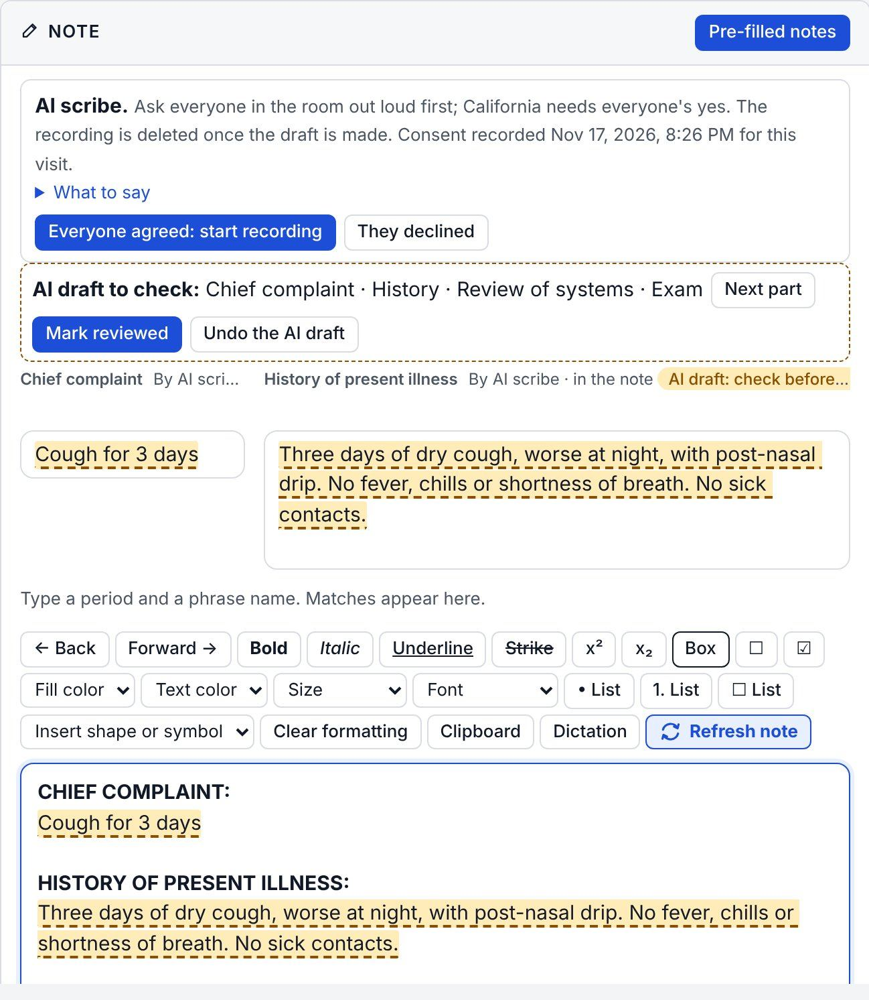
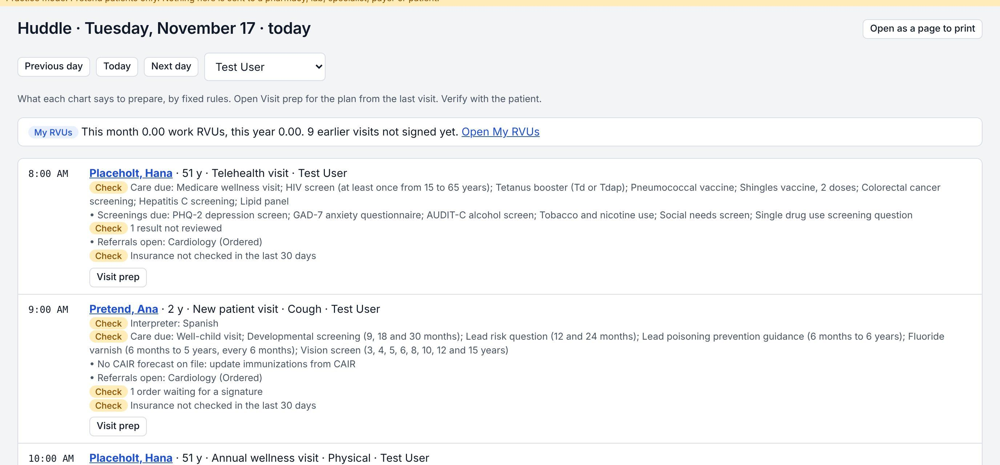
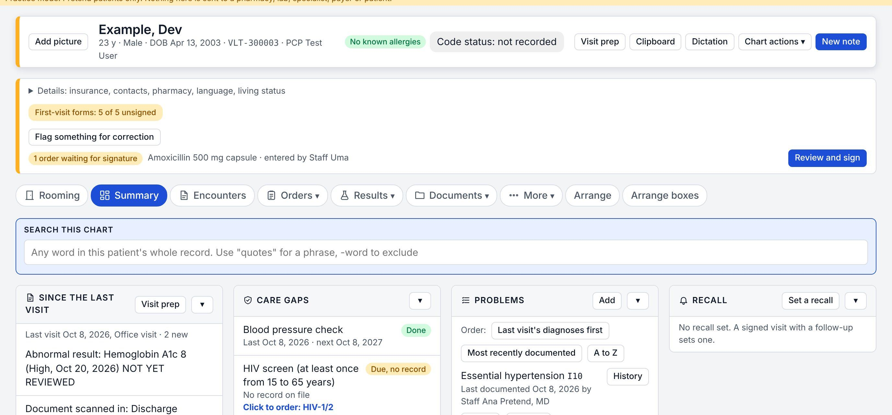
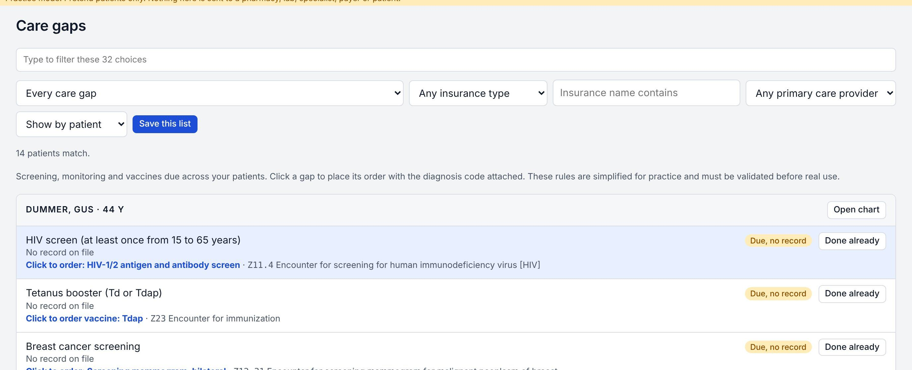
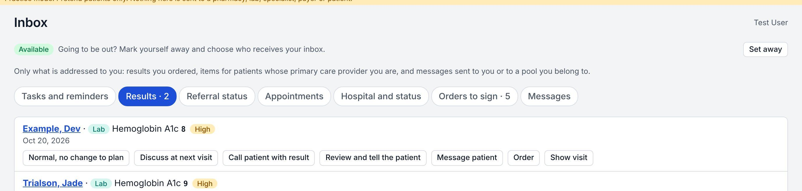
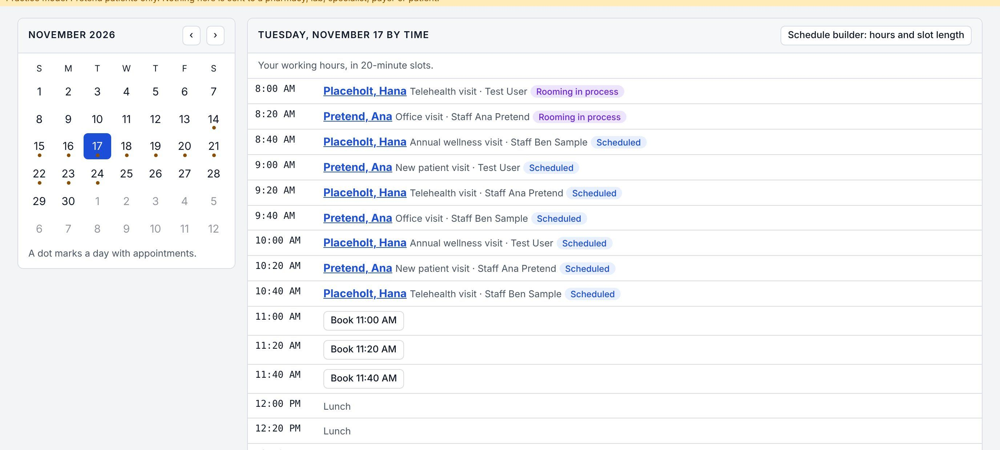

In development · Inviting California primary care practices to the pilot list
The medical record where the visit writes itself, and nothing falls through.
Voluta is a medical record system for primary care, built by a practicing family physician. One tap starts the AI scribe, with the patient's consent recorded in the note. The chief complaint and history are kept for every visit. Every result is followed until someone closes it. California's rules are built in, not bolted on.
Built by Dr. Reynaga, MD, MS, DABFM, a board-certified family physician.

Screens show pretend patients and pretend data.
Built the way a clinic actually works
Every part of Voluta came from a real clinic day: the huddle before the first patient, rooming, the visit, the results that come back after the patient leaves, and the office work around it.
to start the AI scribe, with the consent question on screen and the answer recorded in the note.
The chief complaint, history, review of systems and exam boxes and the note stay in step by themselves.
followed from order to a closed loop, with critical results escalated until someone acts.
in the page. Records are encrypted, and every chart opened is in a sealed audit log.
See it work
Real screens, pretend patients
These are Voluta's own screens, filled with invented patients for testing.

Ready before the first patient
The huddle lists what each visit needs before it starts.
- Care due: vaccines, screenings and annual wellness parts
- Results not yet reviewed, referrals still open, insurance not checked
- Visit prep: the plan from the last visit, ready to print

The whole patient on one screen
The chart opens on what matters today.
- What changed since the last visit
- Care gaps with one tap to order, and a problem list with each diagnosis's history
- Search the whole record, with quotes for a phrase

Care gaps across the practice
Every screening, monitoring test and vaccine due, for every patient.
- Filter by gap, insurance or primary care provider
- One click places the order with its diagnosis code attached
- Mark "done elsewhere" with where and when

Results with one-tap next steps
Each result arrives with the actions a clinician takes most.
- Normal, discuss at the next visit, call the patient, review and tell
- Each test followed until someone closes it
- Critical results escalate until someone acts

A schedule that knows the visit
Booking, check-in and rooming flow into the visit note.
- The reason for the visit and the chief complaint carry into the note
- Rooming status for each patient at a glance
- Blocked time, waitlist and reminders
One visit, one note
From check-in to signature, nothing typed twice
The medical assistant's work, the AI scribe's draft and the physician's words all land in the same note, each credited to who wrote it.
Check-in
The reason for the visit becomes the chief complaint.
Rooming
Vitals, screenings and an optional brief HPI, written into the visit's note.
AI scribe
One tap after everyone agrees out loud. The consent is recorded with the time.
Draft in place
History, review of systems, exam and plans go into their boxes and the note at once.
Review and sign
AI words stay tinted until reviewed. Signing asks if any are left.
Follow-up
Orders, results and recalls are tracked until each is closed.
Built for California
California's rules, built in
Small practices in California carry rules most systems leave to binders and spreadsheets. Voluta builds them into the day's work.
Recording consent
Everyone in the room agrees before the AI scribe records, and the note says when and who asked.
Penal Code 632Protected care kept separate
Reproductive and gender-affirming care is held apart from staff who do not need it, while prior authorizations and referrals still get worked.
California health privacy lawAI messages, disclosed
AI-written handouts carry the required notice in English and Spanish, with a way to reach a person.
AB 3030Vaccine fridge failures
A temperature excursion puts the affected lots on hold, with the VFC steps to follow.
VFC programSharps injury log
Each exposure recorded within the deadline, with the follow-up owed.
Cal/OSHA, 8 CCR 5193Prenatal care on time
A prenatal due list by gestational age, including the California Prenatal Screening Program.
CDPHSecurity and privacy
Designed to be trusted with a chart
An independent review of Voluta was done before any real patient, and its fixes are being made in order. A professional penetration test and an attorney's review come before the pilot.
Encrypted records
AES-256 encryption with the key kept in Google's Secret Manager, never on the disk with the data.
A sealed audit log
Every chart opened and every change is logged, sealed with a key and checked against copies kept off the server.
Each role sees its part
The front desk, billing, referrals and the clinical team each receive only what their work needs.
Sign-in that holds
Two-step codes, growing waits after wrong passwords, and a screen lock enforced by the server.
Backups you can restore
Nightly encrypted backups with a restore drill, and every release can be rolled back.
Tested before every release
Hundreds of server checks and thousands of browser test steps run in Chrome and Safari before each version.
Roadmap
What's built, what's next, what's planned
Voluta is in development and is not yet used with real patients. Here is where it stands.
The clinic day
- AI scribe with recorded consent, drafting the whole visit
- One note per visit from rooming to signature
- Team huddle, care gaps and recalls
- Results inbox with follow-up until closed
- Prenatal due list, wellness visits, care management
- Patient portal, standing orders and refill protocols
- Office safety checks, vaccine fridge, sharps log
Safety before patients
- Lab results filed on the server the moment they arrive
- Patient matching by record number, name and date of birth
- Prescribing checks for allergies, pregnancy and children's doses
- Privacy-law features: change history, self-pay restriction
- Independent penetration test and attorney's review
- A pilot with pretend patients, then a small live pilot
Connected care
- Electronic prescribing, including controlled substances
- Claims, eligibility and payment posting
- California's Data Exchange Framework and national networks
- CAIR immunization registry, two-way
- Electronic lab orders and results
- Spanish-language scribe visits and two-way texting
Pilot
Join the pilot list
We are looking for a few California primary care practices to help shape Voluta before it opens. Tell us about your practice and what you would want from your medical record.
The form opens a ready-to-send email in your email app. Please do not include any patient information.